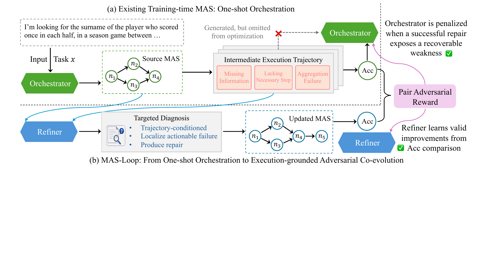
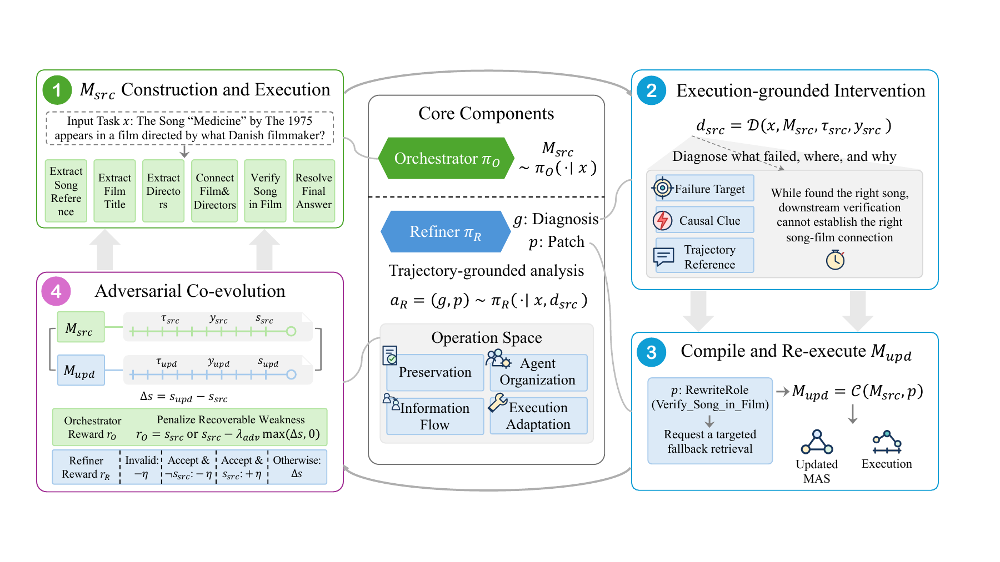
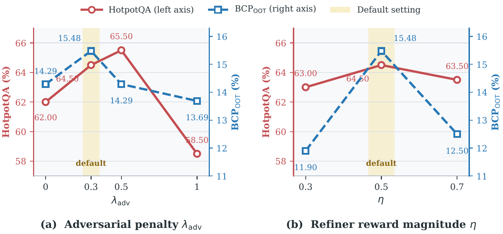

EXECUTION-GROUNDED MULTI-AGENT SYSTEMS
MAS-Loop
Beyond One-Shot Orchestration
towards Self-Evolving Multi-Agent Systems
Build an agent team. Learn from its execution.
Refine the system, then test the change.
Trajectory-grounded refinementOrchestrator–Refiner co-evolutionMAS-JudgeCorpus
OrchestratorMsrc
Executionτsrc
Refinerg + p
Re-executionMupd
EXECUTION-GROUNDED FEEDBACK
Reported in the supplied manuscript · benchmark performance is not measured by this demo.
RESEARCH OVERVIEW
From one-shot teams to systems that improve.
Abstract
Automatic multi-agent systems often learn to construct a team from its final task score. That score provides limited guidance about which agents, connections, or execution choices caused a failure. MAS-Loop introduces a trajectory-conditioned Refiner alongside the Orchestrator: it inspects a source execution, makes one grounded intervention, and independently re-executes the updated system on the same task.
During training, paired executions provide complementary rewards for the two policies, coupling strong initial construction with execution-informed refinement. The manuscript evaluates the framework across seven benchmarks and introduces MAS-JudgeCorpus, a collection of 8,223 trajectory pairs for learning to compare multi-agent systems.
Key contributions
Close the execution loop
Connect system construction to diagnosis and re-execution through observable agent trajectories.
Co-evolve two policies
Use complementary rewards to train the Orchestrator and Refiner from source–updated pairs.
Learn from paired systems
Release corpus construction and reward-model code to support preference learning and test-time selection.
01 /
The missing feedback loop
An Orchestrator can build a team of agents and learn from its final score. But a terminal score says little about where the system went wrong. Was a role too broad? Did a critical fact never reach the final agent? Did a candidate satisfy only one of several constraints?
MAS-Loop couples the Orchestrator with a trajectory-conditioned Refiner. The Refiner inspects the system’s actual execution, diagnoses an actionable weakness, and proposes a bounded edit. Running the updated system on the same task tests the consequence of that decision.

02 /
One task. Two executions. A grounded comparison.
An individual rollout has one refinement decision. Co-evolution happens across training iterations, when the two policies learn from many source–updated pairs.
01
Construct
The Orchestrator generates an attributed agent graph: roles, dependencies and execution settings.
02
Execute
The executor records node outputs, information flow, evidence and failures.
03
Diagnose
The Refiner localizes a failure and proposes a causal hypothesis using observable evidence. Gold labels and outcome rewards are excluded.
04
Compile
A deterministic compiler applies one bounded decision and validates the resulting system.
05
Re-execute
The updated graph runs independently on the same task. Accept and invalid edits also lead to an unchanged-graph rerun.


A small, auditable action space
Accept · AddAgent · RewriteRole · AddEdge · RemoveEdge · AdjustReasoningBudget · ChangeTool. AddAgent connects the new agent to the existing aggregator. Invalid graphs are rejected.
Why two learning signals?
The Orchestrator is rewarded for a strong source system and penalized for recoverable weaknesses. The Refiner is rewarded for realized improvement, with explicit treatment of acceptance and invalid edits.
Δs = supd − ssrc
For a valid changed graph: rO = ssrc − λadv max(Δs, 0). For unchanged graphs: rO = ssrc. Refiner reward: Δs for a valid intervention; +η for accepting a correct source; −η for invalid edits or accepting an incorrect source. Defaults: λadv = 0.3, η = 0.5.
A single realized score change can reflect stochastic execution. It does not isolate the causal effect of the patch.
03 /
What does the evidence say?
MAS-Loop has the highest reported average across seven benchmarks. Refinement improves the Orchestrator on every evaluated benchmark. AOrchestra remains stronger on ALFWorld, so the overall gain should not be read as a win on every task.
■ MAS-Loop■ Comparison methods
Full comparison · percentage scale
| Method | ALFW | SciW | VITA | HotpotQA | BCP | AIME | GPQA | Avg. |
|---|---|---|---|---|---|---|---|---|
| CoT | 34.94 | 1.31 | 26.00 | 49.00 | 9.52 | 19.30 | 47.47 | 26.79 |
| CoT-SC | 32.69 | 0.99 | 32.02 | 54.00 | 11.90 | 26.32 | 54.55 | 30.35 |
| AFlow | 33.33 | 4.09 | 23.91 | 46.50 | 12.50 | 24.56 | 33.33 | 25.46 |
| AOrchestra | 57.69 | 10.54 | 8.49 | 49.00 | 10.71 | 42.11 | 59.09 | 33.95 |
| Skill-MAS | 30.77 | 4.28 | 12.51 | 53.00 | 7.74 | 17.54 | 49.49 | 25.05 |
| Skill-MAS + Refiner | 44.87 | 7.73 | 15.35 | 59.50 | 8.33 | 21.05 | 59.60 | 30.92 |
| MAS-GPT | 49.36 | 14.81 | 8.51 | 50.50 | 11.31 | 19.30 | 46.97 | 28.68 |
| MAS-GPT + Refiner | 50.64 | 18.15 | 11.40 | 58.50 | 11.90 | 26.32 | 48.48 | 32.20 |
| ToolOrchestra | 36.54 | 8.57 | 10.52 | 41.50 | 4.76 | 14.04 | 41.41 | 22.48 |
| MAS-Orchestra | 14.42 | 4.33 | 19.38 | 48.00 | 12.50 | 21.05 | 49.49 | 24.17 |
| MAS-Orchestra + Refiner | 18.59 | 9.30 | 23.54 | 58.00 | 13.69 | 24.56 | 59.09 | 29.54 |
| MAS-Loop Orchestrator | 56.41 | 21.17 | 30.49 | 63.00 | 13.00 | 45.61 | 60.61 | 41.47 |
| MAS-Loop + Refiner | 56.73 | 22.87 | 35.47 | 64.50 | 15.48 | 47.37 | 61.62 | 43.43 |
Table 1 values from the manuscript. OOT: ScienceWorld, VitaBench, BrowseComp-Plus and GPQA-Diamond. Training tasks: ALFWorld, HotpotQA and DeepScaler. AIME is used for in-task reasoning evaluation.
Coupling strength matters
Moderate reward coefficients perform better than the tested endpoints. The default values balance source quality and repair pressure; tuning remains distribution-dependent.

04 /
A clue is not a conclusion.
In the paper’s BrowseComp-Plus case, the task asks for a specialty food shop satisfying both Mexico and California location constraints. The source agent finds a strong California event match, then relaxes the Mexico requirement—even acknowledging that evidence is missing.
Before / source
→Northgate Market
California ✓ Mexico ?After / refinement
Churrería El Moro
California + Mexico“ensuring both locations are explicitly confirmed”
The role edit makes both conditions explicit. Search remains at five rounds; unique retrieved documents increase from eight to nine. The reported updated answer matches the label.
This is a condensed paper case study, not a live benchmark trace. The interactive lab labels its reconstructed diagnosis and shows only the documented agent excerpt.
Explore the live lab →05 /
From paired runs to a reusable resource.
MAS-JudgeCorpus starts from HotpotQA training rollouts over 10,000 tasks. Task-level preference filtering retains 2,063 tasks; pair-level filtering and operation-based deduplication produce 8,223 trajectory pairs. It supports learning which MAS designs to prefer.
10,000tasks→2,063retained tasks→8,223trajectory pairs
In a shared best-of-16 pool, trajectory-conditioned MAS-JudgeRM reaches 60.00% on HotpotQA and 22.62% on BrowseComp-Plus. Its orchestration-only variant reaches 57.50% and 11.31%. Execution evidence improves selection, with substantially higher verification token use.
These are manuscript results. The supplied source archive includes corpus construction and reward-model training code; it does not include the corpus records or trained checkpoints.
06 /
Explore. Run. Reproduce.
Three complementary artifacts: a readable research story, the original research source with a lightweight inference entry point, and a deployable execution lab.
01
Research source
Original training and evaluation code, plus the API-backed inference adapter and tests.
Download code ↓02Online inference lab
Agent graphs, streamed execution events, grounded patches and downloadable paired traces.
Open execution lab ↗03Paper PDF
The supplied anonymous manuscript, including methods, results and limitations.
Open manuscript ↗Scope of the live lab
The online lab uses prompted deepseek-v4.1-flash policies by default. It demonstrates one source–refinement pair without training. It supports arithmetic and search over supplied text. Full ALFWorld, ScienceWorld, VitaBench and BrowseComp-Plus environments require their own assets and adapters. Live API outputs are not the paper’s trained-model results.
Citation
Citation details follow the supplied manuscript.
@misc{masloop2026,
title = {MAS-Loop: Beyond One-Shot Orchestration towards Self-Evolving Multi-Agent Systems},
author = {Lin, Hehai and Yang, Qi and Qin, Chengwei},
year = {2026},
note = {Manuscript under review}
}